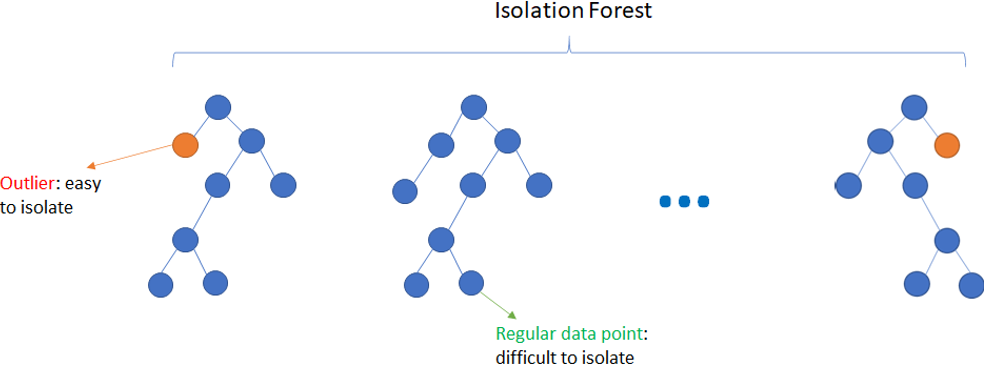

Anomaly Detection#
import pandas as pd
import matplotlib.pyplot as plt
from sklearn.model_selection import train_test_split
from sklearn.preprocessing import LabelEncoder
from sklearn.svm import OneClassSVM
from sklearn.ensemble import IsolationForest
from hdbscan import HDBSCAN
เราสามารถระบุว่า data point หนึ่งเป็น anomaly (ซึ่งอาจเป็นข้อมูลที่มีประโยชน์หรือเป็น outlier ก็ได้) ได้หลายวิธี
One-Class SVM (OCSVM)#
One-Class SVM (OCSVM) เป็น SVM ที่ใช้ในการระบุ anomaly มีหลักการคือ หา hyperplane ที่ตัดผ่าน centre of mass ของ data point เช่น ถ้าข้อมูลถูก standardised (ทำให้ข้อมูลมี mean เป็น 0 กับ variance เป็น 1) hyperplane จะตัดผ่าน origin
Hyperparameter ที่สำคัญ เช่น
nuคือ สัดส่วนของ anomaly ที่มีใน dataset เราต้องกำหนดเองว่าอยากให้มี anomaly มากแค่ไหน (nu=0.5by default)kernelกำหนดเหมือนตอนทำ SVM (kernel=rbfby default)
เราสามารถสร้าง OCSVM model ได้โดยใช้ sklearn.svm.OneClassSVM และระบุแต่ละ data point ว่าเป็น outlier หรือไม่โดยใช้ .predict method (ถ้าเป็น outlier จะได้ -1 แต่ถ้าเป็น inlier จะได้ 1)
# Import data and drop duplicates
data = pd.read_csv('../data/penguins.csv').drop_duplicates()
# Features (X) and target (y)
X = data.drop(columns="species")
y = data["species"]
# train-test split
X_train, X_test, y_train, y_test = train_test_split(X, y, train_size=0.8, random_state=12)
# Encode the target
label_encoder = LabelEncoder().fit(y_train)
y_train = pd.Series(data=label_encoder.transform(y_train), name="species")
y_test = pd.Series(data=label_encoder.transform(y_test), name="species")
# Prepare new X_train to have outliers
neg_out = pd.DataFrame(data=[X_train.min()*2], columns=X_train.columns)
pos_out = pd.DataFrame(data=[X_train.max()*2], columns=X_train.columns)
X_train_new = pd.concat([X_train, neg_out, pos_out], ignore_index=True)
X_train_new
| culmen_length_mm | culmen_depth_mm | flipper_length_mm | body_mass_g | |
|---|---|---|---|---|
| 0 | -0.541701 | 0.567256 | -0.647443 | -0.191722 |
| 1 | 0.431834 | 0.365582 | -0.719893 | -0.636575 |
| 2 | 1.093102 | -0.894882 | 1.381175 | 1.714789 |
| 3 | -1.129496 | 0.768930 | -2.096455 | -1.335629 |
| 4 | -0.468227 | 0.718511 | 0.004613 | -0.255273 |
| ... | ... | ... | ... | ... |
| 257 | 0.799205 | -0.390696 | 1.381175 | 1.524138 |
| 258 | 1.184945 | -0.592371 | 1.743428 | 1.524138 |
| 259 | 1.184945 | 1.273115 | 0.004613 | -0.191722 |
| 260 | -4.389746 | -4.008180 | -4.192911 | -3.815165 |
| 261 | 5.125177 | 4.462135 | 4.356264 | 5.336090 |
262 rows × 4 columns
# Create an OCSVM model and fit on the new training set
ocsvm = OneClassSVM(nu=0.05).fit(X_train_new)
# Predict labels for the new training set (outlier = -1, inlier = 1)
outlier_predictions = ocsvm.predict(X_train_new)
outlier_predictions
array([ 1, 1, 1, 1, 1, -1, 1, 1, 1, 1, 1, 1, 1, 1, 1, 1, 1,
1, 1, 1, 1, 1, 1, 1, 1, 1, 1, 1, 1, 1, 1, -1, 1, 1,
1, 1, 1, 1, 1, 1, 1, 1, 1, 1, 1, 1, 1, 1, 1, 1, 1,
-1, 1, 1, 1, 1, 1, 1, 1, 1, 1, 1, 1, 1, 1, 1, 1, 1,
1, 1, -1, 1, 1, 1, 1, 1, 1, 1, 1, 1, 1, 1, 1, 1, 1,
1, 1, 1, 1, 1, 1, 1, 1, 1, 1, 1, 1, 1, 1, 1, 1, 1,
1, 1, 1, 1, 1, 1, 1, 1, 1, 1, 1, 1, 1, 1, 1, 1, 1,
-1, 1, 1, 1, 1, 1, 1, 1, 1, 1, 1, 1, 1, 1, 1, 1, 1,
1, 1, -1, 1, 1, 1, 1, 1, 1, 1, 1, 1, 1, 1, 1, 1, 1,
1, 1, -1, 1, 1, 1, 1, 1, 1, 1, 1, 1, 1, 1, 1, 1, 1,
-1, 1, 1, 1, 1, 1, 1, 1, 1, 1, 1, 1, 1, 1, 1, 1, 1,
1, 1, 1, 1, 1, 1, 1, 1, 1, 1, 1, 1, 1, 1, 1, 1, 1,
1, 1, 1, 1, 1, 1, 1, 1, 1, 1, 1, 1, 1, 1, 1, 1, 1,
1, 1, 1, 1, 1, -1, -1, 1, 1, 1, 1, 1, 1, 1, 1, 1, 1,
1, -1, 1, 1, 1, 1, 1, 1, 1, 1, 1, 1, 1, 1, 1, 1, 1,
1, -1, 1, 1, 1, -1, -1], dtype=int64)
# Plot outliers and inliers
fig, ax = plt.subplots(figsize=(8, 6))
scatter = ax.scatter(
X_train_new["culmen_depth_mm"],
X_train_new["flipper_length_mm"],
c=outlier_predictions,
)
ax.set(xlabel="culmen_depth_mm", ylabel="flipper_length_mm")
ax.legend(*scatter.legend_elements());
Isolation Forest (IFOR)#
ประยุกต์จาก Random Forest classifier โดยมีหลักการคือ ถ้า data point อยู่ใน leaf node ที่อยู่ใกล้ root node แสดงว่าข้อมูลเหล่านั้นต่างจากข้อมูลอื่น ๆ จึงมีโอกาสเป็น outlier มาก

Hyperparameter ที่สำคัญ เช่น
contaminationคือ สัดส่วนของ anomaly ที่มีใน dataset เราต้องกำหนดเองว่าอยากให้มี anomaly มากแค่ไหน (contamination="auto"(0.1) by default)n_estimatorsจำนวน base estimator ใน ensemble (n_estimators=100by default)
เราสามารถสร้าง IFOR model ได้โดยใช้ sklearn.ensemble.IsolationForest และระบุแต่ละ data point ว่าเป็น outlier หรือไม่โดยใช้ .predict method (ถ้าเป็น outlier จะได้ -1 แต่ถ้าเป็น inlier จะได้ 1)
# Create an IFOR model and fit on the new training set
ifor = IsolationForest(contamination=0.05, random_state=5).fit(X_train_new)
# Predict labels for the new training set (outlier = -1, inlier = 1)
outlier_predictions = ifor.predict(X_train_new)
outlier_predictions
array([ 1, 1, 1, -1, 1, -1, 1, 1, 1, 1, 1, 1, 1, 1, 1, 1, 1,
1, 1, -1, 1, 1, 1, 1, 1, 1, 1, 1, 1, 1, 1, -1, 1, 1,
1, 1, 1, 1, 1, 1, 1, 1, 1, -1, 1, 1, 1, 1, 1, 1, 1,
1, 1, 1, 1, 1, 1, -1, 1, 1, 1, 1, 1, 1, 1, 1, 1, 1,
1, 1, -1, 1, 1, 1, 1, 1, 1, 1, 1, 1, 1, 1, 1, 1, 1,
1, 1, 1, 1, 1, 1, 1, 1, 1, 1, 1, 1, 1, 1, 1, 1, 1,
1, 1, 1, 1, 1, 1, 1, 1, 1, 1, 1, 1, 1, 1, 1, 1, 1,
1, 1, 1, 1, 1, 1, 1, 1, 1, 1, 1, 1, 1, 1, 1, 1, 1,
1, 1, 1, 1, 1, 1, 1, 1, 1, 1, 1, 1, 1, 1, 1, 1, 1,
1, 1, -1, 1, 1, 1, 1, 1, 1, 1, 1, 1, 1, 1, 1, 1, 1,
1, 1, 1, 1, 1, 1, 1, 1, 1, 1, 1, 1, 1, 1, 1, 1, 1,
1, 1, 1, 1, 1, 1, 1, 1, 1, 1, 1, 1, 1, 1, 1, 1, 1,
1, 1, 1, 1, 1, 1, 1, 1, 1, 1, 1, 1, 1, 1, 1, 1, 1,
1, -1, 1, 1, -1, 1, 1, 1, 1, 1, 1, 1, 1, 1, 1, 1, 1,
1, 1, 1, 1, 1, 1, 1, 1, 1, -1, 1, 1, 1, 1, 1, 1, 1,
1, -1, 1, 1, 1, -1, -1])
# Plot outliers and inliers
fig, ax = plt.subplots(figsize=(8, 6))
scatter = ax.scatter(
X_train_new["culmen_depth_mm"],
X_train_new["flipper_length_mm"],
c=outlier_predictions,
)
ax.set(xlabel="culmen_depth_mm", ylabel="flipper_length_mm")
ax.legend(*scatter.legend_elements());
HDBSCAN#
หลักการคือ แปลงระยะห่างของ data point หนึ่งจาก region ที่มี data point หนาแน่นเป็น outlier score
data point ที่มี outlier score สูงจะเป็น outlier
เราสามารถสร้าง HDBSCAN model ได้โดยใช้ hdbscan.HDBSCAN และดูค่า outlier score ของแต่ละ data point ได้โดยใช้ .outlier_scores_
# Create an HDBSCAN model and fit on the new training set
hdbscan = HDBSCAN().fit(X_train_new)
# Predict labels for the new training set (outlier = -1, inlier = 1)
outlier_predictions = hdbscan.outlier_scores_
outlier_predictions
array([0.00000000e+00, 0.00000000e+00, 0.00000000e+00, 3.17528981e-01,
2.02134248e-01, 3.31070375e-02, 8.89695744e-02, 5.25413368e-02,
0.00000000e+00, 1.83951358e-01, 2.76037468e-02, 1.06928111e-01,
2.85289298e-02, 1.00640982e-02, 1.00267331e-01, 9.57614105e-02,
3.34814633e-02, 3.25418513e-03, 1.81681168e-01, 3.01732971e-01,
1.84894562e-01, 5.25413368e-02, 2.92216091e-01, 5.10829503e-02,
6.24714120e-02, 1.21481994e-02, 1.83110823e-01, 1.92506290e-01,
1.30760317e-01, 9.85428190e-02, 9.84947626e-02, 5.15652155e-01,
0.00000000e+00, 6.70578141e-02, 2.61764707e-01, 1.06975492e-01,
2.34609784e-01, 1.25192260e-01, 1.05076823e-01, 1.69992303e-01,
1.11601002e-02, 4.73255408e-02, 5.03589579e-03, 3.17939167e-01,
3.00210429e-01, 2.04815495e-01, 1.52876096e-01, 2.09967784e-01,
8.29642612e-02, 4.92036372e-04, 1.16419251e-01, 1.93662811e-01,
0.00000000e+00, 3.87094596e-02, 4.28315840e-02, 5.25413368e-02,
2.42482017e-01, 5.20111481e-01, 3.62841805e-01, 5.64374198e-02,
2.37105646e-02, 4.87463040e-02, 1.46540559e-01, 0.00000000e+00,
1.16005731e-01, 2.82958925e-02, 3.88020337e-02, 0.00000000e+00,
8.18077315e-02, 1.78984233e-01, 5.30178411e-01, 8.49839559e-02,
8.11013535e-02, 0.00000000e+00, 1.39332134e-01, 2.73249362e-02,
1.36185376e-01, 5.37307107e-02, 1.48621119e-01, 3.27616861e-02,
1.64293784e-01, 9.82367957e-02, 3.62919604e-02, 1.40596871e-01,
2.76037468e-02, 6.83386884e-02, 1.91196073e-01, 0.00000000e+00,
0.00000000e+00, 6.13723185e-02, 5.04715774e-02, 6.53598387e-02,
1.62457394e-03, 1.31704844e-01, 7.79865174e-03, 0.00000000e+00,
1.36898048e-01, 1.87730487e-01, 6.66748336e-02, 2.53616454e-02,
9.45463628e-02, 4.88871324e-02, 1.91279400e-01, 1.50665663e-01,
1.11601002e-02, 8.29320704e-02, 7.91317905e-02, 2.06866072e-01,
2.89843812e-02, 5.37307107e-02, 1.94999586e-01, 3.09136417e-01,
4.51177283e-02, 2.96411374e-01, 0.00000000e+00, 0.00000000e+00,
4.08275820e-02, 1.61326570e-01, 7.04259303e-02, 3.48108523e-01,
1.61160623e-01, 1.61202930e-01, 6.54676218e-02, 1.74630523e-01,
1.99288047e-01, 1.10161814e-01, 6.64926536e-02, 9.00943148e-02,
9.89621192e-02, 0.00000000e+00, 1.47834683e-01, 5.25413368e-02,
4.88903213e-02, 9.19571283e-02, 2.44864866e-02, 1.51600078e-01,
1.59926364e-01, 0.00000000e+00, 3.70159049e-01, 1.90224918e-01,
7.32680379e-02, 8.15758271e-02, 3.50397883e-01, 1.86328711e-02,
4.13799651e-02, 1.28682394e-02, 0.00000000e+00, 6.67678819e-02,
0.00000000e+00, 1.55826080e-02, 3.94450706e-02, 5.56277374e-02,
1.33189687e-01, 9.59282332e-02, 1.92290981e-01, 4.57878963e-01,
2.69361028e-01, 4.44107081e-02, 0.00000000e+00, 9.58307416e-02,
1.70301737e-01, 6.48182631e-02, 5.63814703e-02, 5.86386365e-01,
1.95110018e-01, 0.00000000e+00, 1.34826982e-01, 3.26120057e-02,
3.15850163e-01, 3.54047987e-01, 4.55373560e-01, 1.48621119e-01,
2.10616835e-01, 4.84493016e-02, 0.00000000e+00, 1.22806368e-01,
2.42094954e-01, 7.00721114e-02, 2.23739203e-01, 5.26642848e-02,
1.73074123e-01, 0.00000000e+00, 2.10093647e-01, 0.00000000e+00,
3.31234898e-01, 1.25599524e-01, 3.20748927e-02, 4.31107779e-02,
1.14856188e-01, 4.50619161e-02, 1.39332134e-01, 5.67489845e-02,
2.59003856e-01, 8.18764601e-02, 0.00000000e+00, 1.87412591e-02,
9.44789252e-02, 2.45028519e-01, 1.37452828e-01, 0.00000000e+00,
2.07895656e-01, 1.91304165e-01, 8.25287723e-02, 1.06099584e-01,
6.32753463e-03, 2.05433660e-01, 1.91383260e-01, 0.00000000e+00,
0.00000000e+00, 0.00000000e+00, 5.04130044e-03, 1.08545229e-01,
7.79865174e-03, 1.41602392e-01, 9.86516171e-02, 1.77093727e-01,
1.66453868e-01, 4.47693909e-02, 1.47834683e-01, 1.80660530e-02,
0.00000000e+00, 3.33275982e-01, 3.60500806e-01, 1.64543409e-01,
0.00000000e+00, 4.83115784e-01, 2.76951534e-01, 2.58643198e-02,
0.00000000e+00, 2.33345793e-01, 3.62919604e-02, 1.55512064e-01,
1.77012097e-02, 9.77046720e-03, 0.00000000e+00, 1.13441664e-01,
1.13441664e-01, 1.97038982e-01, 4.93770518e-02, 8.24510244e-02,
2.68180921e-01, 1.89968408e-02, 1.53298585e-01, 0.00000000e+00,
3.84947510e-01, 2.04815495e-01, 6.41847763e-02, 4.65058000e-01,
1.82801281e-01, 2.01505587e-01, 6.13399498e-02, 0.00000000e+00,
0.00000000e+00, 2.00639438e-01, 0.00000000e+00, 2.88280990e-01,
3.15261324e-01, 8.33761372e-02, 8.16109136e-02, 0.00000000e+00,
7.38390787e-01, 7.74882173e-01])
fig, ax = plt.subplots(figsize=(8, 6))
scatter = ax.scatter(
X_train_new["culmen_depth_mm"],
X_train_new["flipper_length_mm"],
c=outlier_predictions,
)
ax.set(xlabel="culmen_depth_mm", ylabel="flipper_length_mm")
plt.colorbar(scatter, label='Outlier Score');